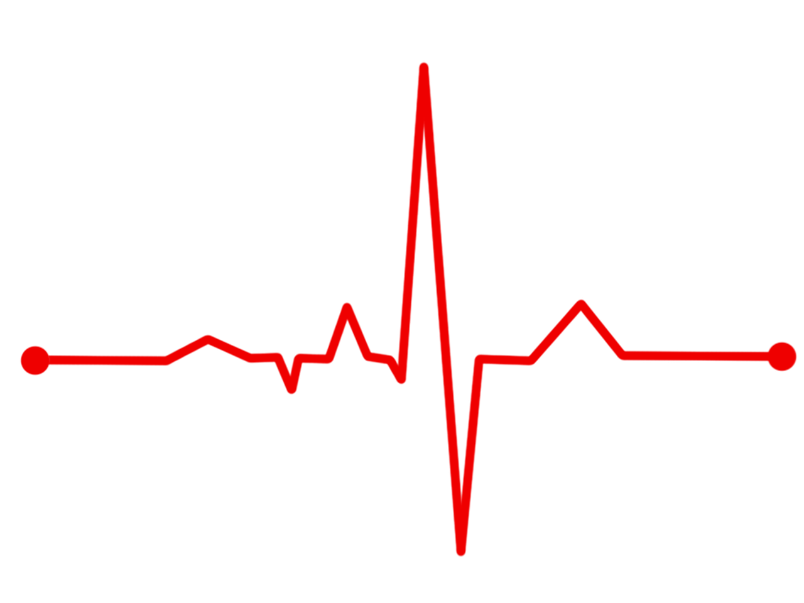

Overview
I am a Computer and Communications Engineering student at the American University of Beirut. My studies have helped me realize that possibilities are endless with the help of software, but they are also within our grasp. I admire the fact that in almost every domain or challenge, software solutions can always make a positive impact.
My Projects
Optimized Bus Routes for Beirut
I conceived the idea of this project as part of a course-related requirement. The application, written in Python and PyCUDA, implements a parallelized path-planning paradigm to design an efficient public transportation grid for the city of Beirut, Lebanon. This includes locating optimal bus stops around Beirut, and planning the routes for each bus, and doing all this as time-efficiently as possible.
Minesweeper
This is a simple minesweeper clone I developed with a friend between classes in the summer of 2019 using JavaFX.
Dardish Code NLP

I developed a Decision Tree Model to predict key information about a piece of code from its corresponding comment block, enabling us to move from high-level natural language to a machine-friendly code skeleton through NLP features.
Work Experience
Inetgration Developer
During the summer of 2020 I completed an internship at Murex Systems, where I worked as a MuleSoft integration developer.
I was tasked with upgrading the message broker being used by the team (ActiveMQ 5) to its next-gen successor (ActiveMQ Artemis).
Then, I was tasked with upgrading the whole Mule runtime engine (from Mule 3 to Mule 4). This uprade was of high impact on the team's progress and daily commitments, so my job was to alleviate this effect. I installed the new runtime engine, developed and demo'd proof-of-concept applications in accordance with Murex's architecture, and documented all the details needed for a Mule 3 developer to upgrade the runtime engine as smoothly and efficiently as possible.
Contactless Heart Rate Detection
I worked as a research assistant with Dr. Zaher Dawy at AUB where I was tasked to develop a computer program that can extract information about cardiovascular activity of a subject without ever touching them. This is accomplished by analyzing the varying color of pixels in video footage of a person's face. We managed to implement a prototype that could detect human heart rate accurately ± 5 bpm.